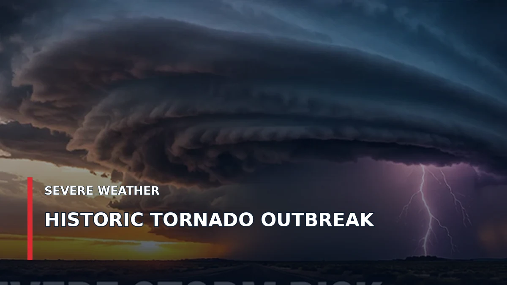

The December Nightmare: The Tornado Outbreak That Devastated Mayfield, Kentucky

In the middle of December, a violent nighttime tornado outbreak tore across the central United States. Western Kentucky became the center of one of the most devastating weather disasters of 2021.
WATCH TEXAS NEWS STUDIO LIVE →
A December night that turned deadly
On December 10 and into December 11, 2021, severe thunderstorms produced numerous tornadoes across several states. One particularly destructive, long-track EF4 tornado crossed western Kentucky, striking communities including Mayfield, where homes, businesses and downtown buildings suffered catastrophic damage.
In Mayfield, the tornado struck after dark. The loss of electricity, flying debris and rapidly changing conditions made an already dangerous event even more frightening. The storm also destroyed much of a candle factory where people were working.
Why were tornadoes forming in December?
Tornadoes are often associated with spring, but the atmosphere does not follow a calendar. Warm, moist air moving north from the Gulf of Mexico encountered strong winds and an approaching weather system. Powerful changes in wind speed and direction with height helped thunderstorms rotate and intensify.
Those ingredients can come together during late autumn and winter, especially in the Mississippi and Ohio valleys and parts of the South.
What made this outbreak so remarkable?
The timing was unusual but not unprecedented. The combination of violent tornadoes, long tracks, nighttime conditions and widespread destruction made this outbreak especially consequential. The Mayfield-area tornado was rated EF4 by the National Weather Service, the second-highest rating on the Enhanced Fujita scale.
What the disaster still teaches us
A winter tornado warning deserves the same attention as a spring warning. During a tornado warning, move to a small interior room on the lowest floor of a sturdy building, away from windows. A mobile home or vehicle is not a safe shelter from a violent tornado.
The December 2021 disaster remains an important reminder that significant tornado outbreaks can occur well outside the traditional spring season.
Visit the TNS Weather Portal for weather tools and updates, or return to Weather Stories for more historic events.